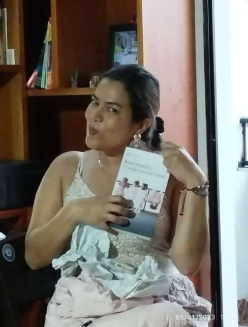

Ir a Inicio
Ir a Rector
Ir a Coordinador
Ir a Inicio
Ir a Rector
Ir a Coordinador
Docentes:
- Matemáticas: Tatiana Ossa
- Educación Física: Gerardo
- Español: Mabel lenis
- Quimica: Tatiana S
- Biologia: Lorena Castañeda
- Física: Linda Marcela
- Filosofia: Jose Jesus
- Religion: Frank Galeano
- Sociales: Jhon Bairon
- Ingles: Eliana
- Artistica: Nidia
- Ética: Luz Dary
- Desarrollo de software: Jose Alexander
Es docente de matematicas, le da clases a los grados 11,ha estado en el colegio desde hace 5 años.
Es profesor de educacion fisica, le da clase a los grados 11 y a algunos 9, ha estado en el colegio desde hace mas de 5 años.
Es profesora de español, le da a la mayoria de los 11, ha estado en el colegio desde hace 3 años.
profesora del grado 11 que llego este año como reemplazo de Nelson
profesora de biologia del grado 11 y profesora de la media tecnica de agronomia
profesora especialisada en fisica que da en el grado 11 y 10, llego en el 2019
profesor de filosofia de grado 11 y 10

profe de filosofia,ética y religión, da en el grado 11
profesor de socailes y economia del grado 11 y 10
profesora del grado 11 que da en ingles
profesora del grado 11, da artistica y es la encargada de la antioqueñidad
profesora de ética y religón que da en el grado 11 y 10
profesor de media tecnica para los grados 11